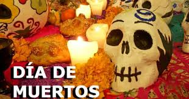
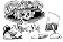

Festividad del dia de muertos en México
Que se Celebra??
El Día de Muertos es considerado la tradición más representativa de la cultura mexicana.
Abriendo las páginas de nuestro pasado podemos encontrar que esta celebración es de origen prehispánico y posteriormente con la llegada de los españoles se combinó con la celebración católica de Todos los Santos y Fieles Difuntos.
El origen del Día de Muertos tiene antecedentes relacionados con el mestizaje.
Comprende rasgos culturales indígenas y españoles que al mezclarse dieron lugar a todos los ritos y ceremonias.


Elizabeth Pacio González
Fechas Principales
Cómo se celebra
- El 28 de octubre corresponde a las personas que murieron a causa de un accidente.
- El 29 del mismo mes se espera la llegada de las almas de los “limbos” o niños que murieron sin haber recibido el bautizo.
- El 1 de noviembre es el día en que regresan las almas de los niños.
- El 2 de noviembre es el dia en que regresan las almas de los adultos.
Ofrenda
Los elementos de la ofrenda de Día de los Muertos
- Veladoras o cirios: Se utilizan las velas como símbolo del elemento fuego y por su asociación religiosa. Es común incluír una para cada difunto recordado más otra para un alma "olvidada." A veces las veladoras son colocadas en forma de cruz.
- Imágenes de los difuntos: La ofrenda se coloca en anticipación a la visita de las almas de nuestros seres queridos ya difuntos, así es que se colocan sobre el altar los retratos de los mismos.
- Flores:La flor de cempazúchil (tambien conocida como zempoaxochitl o cempasúchil), de color intenso anaranjado, es la más común en un altar de Muertos. Tanto su belleza como su olor atraen a las almas de los difuntos hacia la ofrenda. Muchas veces las flores se colocan en forma de cruz o formando un "sendero" a seguir por las ánimas.
- Sal: Se coloca en un recipiente sobre el altar como símbolo de purificación.
- Incienso: Tradicionalmente no se utilizaba el incienso en sí sino el copal, una resina que, al quemarlo, arroja un humo muy aromático. El agradable olor atrae a las almas de los difuntos hacia la ofrenda y también, por su asociación con la religión, es un fuerte símbolo de oración y purificación.
- Calaveras: Suelen emplearse calaveras de diversos tamaños y confeccionadas bien de yeso o de distintos materiales comestibles como son el chocolate, el azúcar y el amaranto.
- Pan de muerto: Casi siempre está presente el pan de muerto en alguna de sus formas (dulce y redondo en algunas partes de México, salado y en forma de cuerpo en otras).
- Comida y bebida: Las ánimas que visitan el altar han viajado desde muy lejos y necesitan recobrar fuerzas con una buena comida. En la ofrenda se acostumbra incluír platillos tradicionales mexicanos como son los tamales y el mole con pollo o pavo, los que se presentan en ollas y platos de barro cocido. No pueden faltar también las frutas de la estación y la calabaza en tacha.
Dia de muertos
La catrina
La Catrina:
Puede mostrarse de muchas formas. Algunas veces se presenta alegre, vestida con la elegancia de comienzos del siglo pasado, deseosa de divertirse e incluso coqueta y seductora con los mortales. Pero otras veces, es la 'huesuda' que en cualquier momento sólo se aparece para llevarnos de este mundo.
La relación que con ella se tiene está definida por circunstancias vinculadas con la historia y la cultura; en las tradiciones y costumbres de cada región se le considera un huésped imprescindible en la ocasiones importantes con los muertos, como el Día de Todos Santos y el dìa de los Fieles Difuntos. La muerte y la memoria de nuestros seres queridos nos dan un sentido de identidad que a su vez arraiga nuestra cultura.
Dia de muertos
Janitzio
El ritual de velación de el día de muertos, constituye una de las manifestaciones religiosas más importantes. Durante la noche del 1 de noviembre, llevan hasta el lugar donde yace la tumba de sus antepasados, la ofrenda símbolo de recuerdo y presencia a la memoria de sus seres fallecidos; así que, quienes conforman el evento y la representación, lo hacen con profundo respeto, de veneración a los seres que materialmente ya no existen, y al recuerdo de lo que fueron. La velación ha tenido un profundo arraigo en varios pueblos de Janitzio, Jarácuaro, Tzintzuntzan, Ihuatzio y Tzurumútaro localizadas dentro de la región del Lago de Pátzcuaro.
Dia de muertos
Huaquechula
El municipio de Huaquechula ha adquirido relevancia en el ámbito cultural y turístico debido a la celebración del Día de Muertos, ya que año con año se erigen altares monumentales que llegan a medir hasta tres metros de altura.
Con los altares monumentales de Huaquechula se celebra el retorno transitorio a la tierra de quienes fallecieron en el transcurso del año.
El deseo de realizar año con año estas ofrendas es adorar a los difuntos y "convivir" con las almas que regresan del más allá para estar junto con sus seres queridos en esta época de Todos Santos.
Dia de muertos
Mi Opinion
El dia de muertos es una tradición muy importante en nuestra cultura que tenemos que seguir y mantenerla como una ocasión especial para recordar a nuestros seres queridos .
Dia de muertos